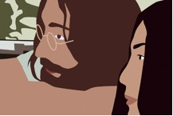
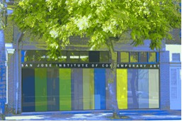

Exhibition: August 8 – September 16, 2006 Reception & Performance: August 12, 2006
San Jose, CA –The San Jose Institute of Contemporary Art (ICA) is proud to present the second annual NextNew. This year, we have asked five well-established Bay Area new media artists to each choose a “next new” artistic talent on the horizon. NextNew2006: Art and Technology will feature the technology-based work of Anthony Discenza, Kota Ezawa, Ken Goldberg, Ed Osborn, and Julia Page who all accepted our invitation to provide a visionary look at what the next new trends, movements, and/or ideas will be through the work of five emerging artists. Those “next new” artists are Nate Boyce, Elise Irving, Daniel Massey, Joe McKay, and Stephanie Syjuco.
NextNew2006 will coincide with the ISEA2006 Symposium on Electronic Art and the ZeroOne San Jose Global Festival of Art on the Edge, both of which will take place August 7 – 13. The ISEA Symposium is a prestigious international art and technology conference that is sponsored biennially by the Netherlands-based Inter-Society for Electronic Art (ISEA). Every other year, cities around the world bid to host the symposium and this year it will be held in San Jose. ZeroOne is a milestone festival that will be held biennially in San Jose, making the work of the most innovative contemporary artists in the world accessible to an audience that is expected to come from around the world.
In combination with NextNew2006, on Saturday, August 12th, the night of the ISEA Festival SoFA Block Party, the ICA and new media artist Clive McCarthy will present A Painting Performance, a multi-media, interactive street event. McCarthy will create a dynamic architectural portrait that is a unique combination of cutting-edge technology and traditional painting and music, performed in front of a live audience.
The NextNew2006: Art and Technology exhibition at the ICA and the accompanying Clive McCarthy performance raise significant and relevant questions for the viewing audience regarding issues of technology’s place and impact on contemporary art and culture. They are unique additions to the art and technology activities that will be taking place throughout the city during the Symposium and Festival.
NextNew2006: Art and Technology is funded by Applied Materials Excellence in the Arts: a program of Arts Council Silicon Valley.

Images:
Kota Ezawa, still from Lennon Sontag Beuys, 2004, Courtesy of the Artist and Haines Gallery, San Francisco Clive McCarthy, maquette for A Painting Performance, 2006, Courtesy of the Artist
FOR IMMEDIATE RELEASE: May 2, 2006 CONTACT: Fanny Retsek, 408.283.8155,